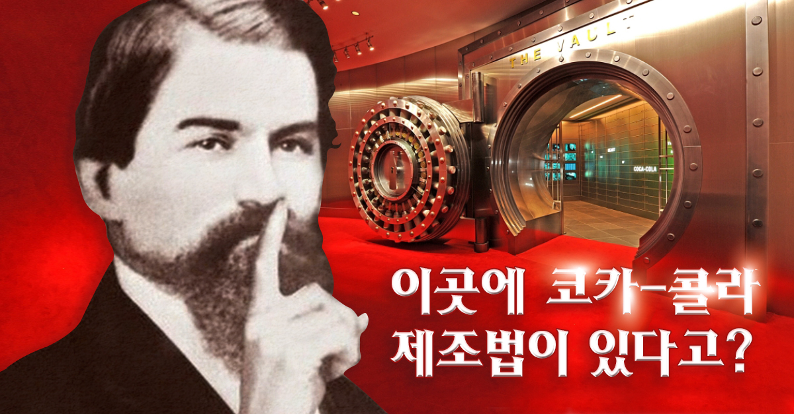
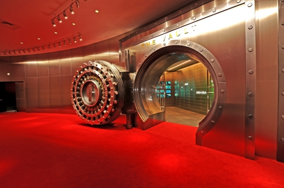
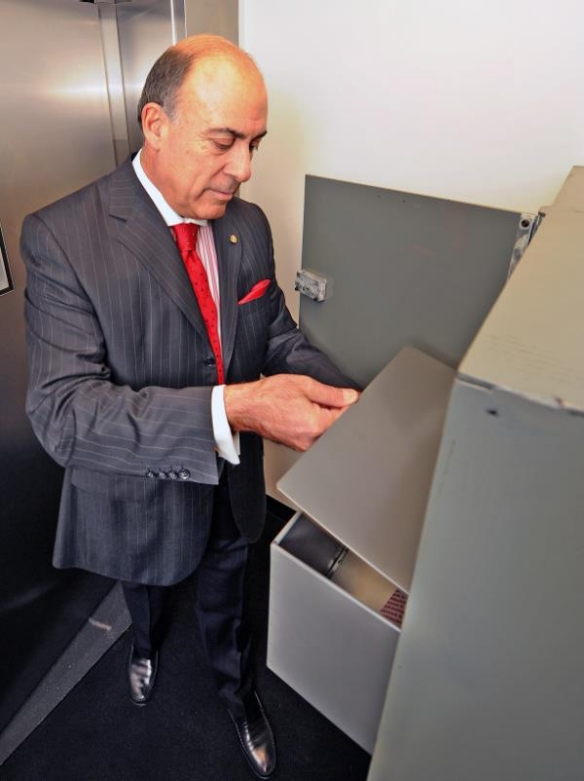
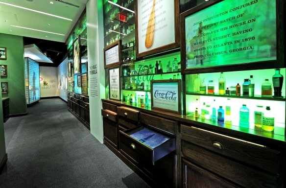

PRODUCT


BRANDS


HISTORY

1급 기밀! 코카-콜라 제조법에 담긴 비밀은?
1886년 존 펨버턴 박사가 코카-콜라를 발명한 이후, 코카-콜라의 제조법은 철저히 비밀에 부쳐져 왔다.
베일에 싸여있다 보니, 제조법을 둘러싸고 각종 루머도 쏟아졌다. 지금까지 "코카-콜라 비밀 공식을 알고 있다."라고 주장하는 사람들도 꽤
있었지만, 매번 해프닝으로 끝날 수밖에 없었다.
코카-콜라 제조법은 언제나 금고 속에 안전하게 보관돼왔기 때문이다.
어떻게 지금까지 비밀을 유지했는가 펨버턴 박사는 코카-콜라 제조 공식을 소수의 인원들과 구두로만 공유했으며, 기록으로 남기지 않을 만큼 비밀 유지에 힘썼다. 1892년 코카-콜라의 독점 사업권을 인수해 3년 만에 코카-콜라가 미국 전역에서 판매될 수 있도록 성장시킨 아사 캔들러도 제조법을 보호하기 위해 노력했다. 코카-콜라 용기의 라벨에 적혀있는 성분 표시를 대신해 번호를 사용해서 정보를 식별할 수 있게 했다. 마치 다빈치 코드같이 성분을 암호화한 것이다. 당시 코카-콜라의 인기가 너무 높아져서, 유사제품들이 우후죽순으로 생겨나고 있어 세운 방책이었다. 그렇게 철두철미하게 지켜온 코카-콜라의 비밀 공식은 1900년대 초반 그의 아들인 찰스 하워드 캔들러(Charles Howard Candler)에게 전수된다. 이후 1919년 캔들러 가족은 어니스트 우드러프(Ernest Woodruff)에게 회사를 2,500만 달러에 매각한다. 우드러프는 자금을 조달하기 위해 은행의 도움을 받지 않을 수 없었는데, 은행은 코카-콜라의 제조법을 담보로 맡겨둘 것을 요구했다. 그때 우드러프는 캔들러의 아들에게 처음으로 제조 공식을 종이에 옮겨 적도록 했으며, 뉴욕 보증은행(Guaranty Bank) 금고에 그 서류를 보관했다. 대출금을 모두 갚은 1925년에는 애틀랜타 선트러스트 은행(SunTrust Banks) 금고로 옮겼으며, 그곳에서 86년간 보관했다. 제조법의 비밀, 대중에게 공개?! 2011년, 코카-콜라 탄생 125주년을 맞아 코카-콜라는 제조법의 비밀을 담은 문서를 코카-콜라 박물관인 월드 오브 코카-콜라(World of Coca-Cola)로 옮겨오기로 결정했다.
결정은 과감했지만, 이유는 단순했다. 제조법의 비밀을 코카-콜라의 팬들이 좀 더 가까이에서 보고, 듣고, 느끼고, 경험할 수 있도록 만들기 위해서였다. 물론 금고 속에 보관되어 있어 실제 레시피를 볼 수는 없지만, 인터랙티브한 영상과 이미지들을 통해 비밀 공식을 둘러싼 다양한 역사적 사실, 흥미로운 이야기를 보고 들을 수 있다.
youtube
월드 오브 코카-콜라 (World of Coca-Cola) 주소: 121 Baker St. NW, Atlanta, GA 30313-1807 개장 시간: AM 9:00~ PM 5:00 (상황에 따라 달라질 수 있다) 홈페이지: worldofcoca-cola.com 수년에 걸쳐 많은 사람들이 코카-콜라의 비밀 공식을 해독(?) 하려고 시도했지만, 아무도 성공하지 못했다. 그동안 제조법을 알고 있다고 주장하는 사람들도 많았고, 검증되지 않은 문서들이 인터넷에 떠돌고 있지만 단 하나 정확하게 이야기할 수 있는 것은 비밀 공식은 단 한 번도 유출된 적이 없다는 사실이다. 비밀 제조법을 지키기 위해 수십 년간 다양한 수많은 007 작전(?)을 실행해왔기 때문이다. 금고 속의 비밀은 앞으로도 많은 사람들에게 무한한 상상의 즐거움으로 남겨두고자 한다. (^^) * 토막 상식 Q&A Q. 코카-콜라 맛이 전 세계마다 조금씩 다른데, 제조법이 잘 유지되고 있는 게 맞나요? 전 세계 오리지널 코카-콜라의 제조법은 동일합니다. 다만, 전 세계 코카-콜라의 맛이 다르다고 느끼는 것은 각 지역마다 물 맛의 차이가 있기 때문입니다. 또한 마시는 사람의 기분, 음료의 온도 등 다양한 요소가 맛에 영향을 미치기도 합니다. Q. 전 세계 코카-콜라 공장이 수백 개에 달하는데, 정말 비밀 유지가 가능한가요? 코카-콜라는 보틀링 시스템으로 운영되고 있습니다. 원액은 코카-콜라 본사에서 제조하며, 보틀링 파트너들은 본사로부터 받은 원액을 토대로 탄산과 물, 다양한 원료 등을 일정 비율로 섞어 최종적으로 완제품을 만듭니다. 때문에 코카-콜라는 전 세계 200여 개국에 진출해있는 글로벌 회사이지만, 핵심 비밀은 지켜질 수 있습니다.

▲ 코카-콜라 제조법이 보관돼있는 금고 입구어떻게 지금까지 비밀을 유지했는가 펨버턴 박사는 코카-콜라 제조 공식을 소수의 인원들과 구두로만 공유했으며, 기록으로 남기지 않을 만큼 비밀 유지에 힘썼다. 1892년 코카-콜라의 독점 사업권을 인수해 3년 만에 코카-콜라가 미국 전역에서 판매될 수 있도록 성장시킨 아사 캔들러도 제조법을 보호하기 위해 노력했다. 코카-콜라 용기의 라벨에 적혀있는 성분 표시를 대신해 번호를 사용해서 정보를 식별할 수 있게 했다. 마치 다빈치 코드같이 성분을 암호화한 것이다. 당시 코카-콜라의 인기가 너무 높아져서, 유사제품들이 우후죽순으로 생겨나고 있어 세운 방책이었다. 그렇게 철두철미하게 지켜온 코카-콜라의 비밀 공식은 1900년대 초반 그의 아들인 찰스 하워드 캔들러(Charles Howard Candler)에게 전수된다. 이후 1919년 캔들러 가족은 어니스트 우드러프(Ernest Woodruff)에게 회사를 2,500만 달러에 매각한다. 우드러프는 자금을 조달하기 위해 은행의 도움을 받지 않을 수 없었는데, 은행은 코카-콜라의 제조법을 담보로 맡겨둘 것을 요구했다. 그때 우드러프는 캔들러의 아들에게 처음으로 제조 공식을 종이에 옮겨 적도록 했으며, 뉴욕 보증은행(Guaranty Bank) 금고에 그 서류를 보관했다. 대출금을 모두 갚은 1925년에는 애틀랜타 선트러스트 은행(SunTrust Banks) 금고로 옮겼으며, 그곳에서 86년간 보관했다. 제조법의 비밀, 대중에게 공개?! 2011년, 코카-콜라 탄생 125주년을 맞아 코카-콜라는 제조법의 비밀을 담은 문서를 코카-콜라 박물관인 월드 오브 코카-콜라(World of Coca-Cola)로 옮겨오기로 결정했다.

▲ 코카-콜라 비밀 제조 공식을 금고에 보관하고 있는 코카-콜라 전 CEO 무타 켄트(Muhtar Kent)결정은 과감했지만, 이유는 단순했다. 제조법의 비밀을 코카-콜라의 팬들이 좀 더 가까이에서 보고, 듣고, 느끼고, 경험할 수 있도록 만들기 위해서였다. 물론 금고 속에 보관되어 있어 실제 레시피를 볼 수는 없지만, 인터랙티브한 영상과 이미지들을 통해 비밀 공식을 둘러싼 다양한 역사적 사실, 흥미로운 이야기를 보고 들을 수 있다.

이 공간에 들어와있으면 마치 코카-콜라의 비밀에 아주 가까이 다가간 듯한 느낌을 받을 수 있다. 아래 영상을 클릭해보면 맛보기로 경험할 수 있다.youtube
월드 오브 코카-콜라 (World of Coca-Cola) 주소: 121 Baker St. NW, Atlanta, GA 30313-1807 개장 시간: AM 9:00~ PM 5:00 (상황에 따라 달라질 수 있다) 홈페이지: worldofcoca-cola.com 수년에 걸쳐 많은 사람들이 코카-콜라의 비밀 공식을 해독(?) 하려고 시도했지만, 아무도 성공하지 못했다. 그동안 제조법을 알고 있다고 주장하는 사람들도 많았고, 검증되지 않은 문서들이 인터넷에 떠돌고 있지만 단 하나 정확하게 이야기할 수 있는 것은 비밀 공식은 단 한 번도 유출된 적이 없다는 사실이다. 비밀 제조법을 지키기 위해 수십 년간 다양한 수많은 007 작전(?)을 실행해왔기 때문이다. 금고 속의 비밀은 앞으로도 많은 사람들에게 무한한 상상의 즐거움으로 남겨두고자 한다. (^^) * 토막 상식 Q&A Q. 코카-콜라 맛이 전 세계마다 조금씩 다른데, 제조법이 잘 유지되고 있는 게 맞나요? 전 세계 오리지널 코카-콜라의 제조법은 동일합니다. 다만, 전 세계 코카-콜라의 맛이 다르다고 느끼는 것은 각 지역마다 물 맛의 차이가 있기 때문입니다. 또한 마시는 사람의 기분, 음료의 온도 등 다양한 요소가 맛에 영향을 미치기도 합니다. Q. 전 세계 코카-콜라 공장이 수백 개에 달하는데, 정말 비밀 유지가 가능한가요? 코카-콜라는 보틀링 시스템으로 운영되고 있습니다. 원액은 코카-콜라 본사에서 제조하며, 보틀링 파트너들은 본사로부터 받은 원액을 토대로 탄산과 물, 다양한 원료 등을 일정 비율로 섞어 최종적으로 완제품을 만듭니다. 때문에 코카-콜라는 전 세계 200여 개국에 진출해있는 글로벌 회사이지만, 핵심 비밀은 지켜질 수 있습니다.